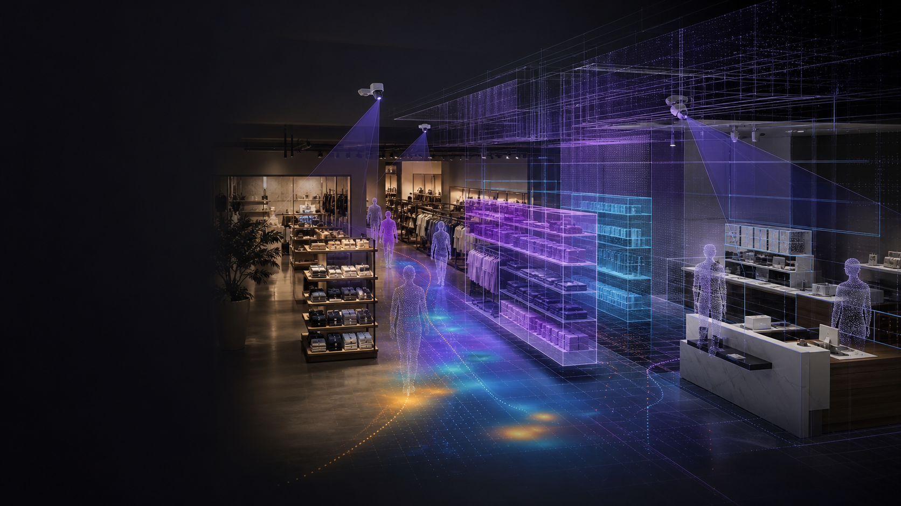
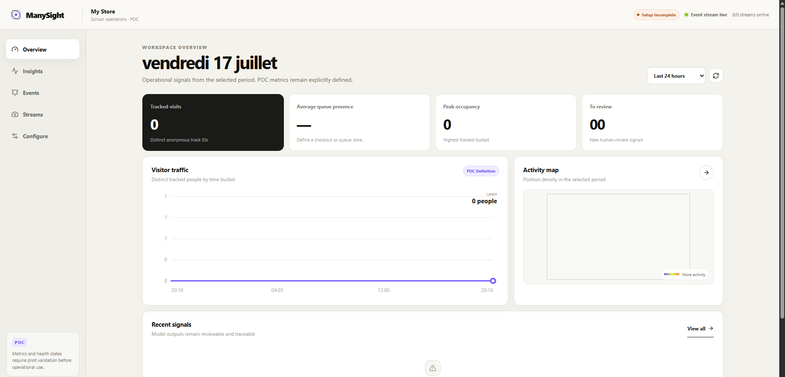
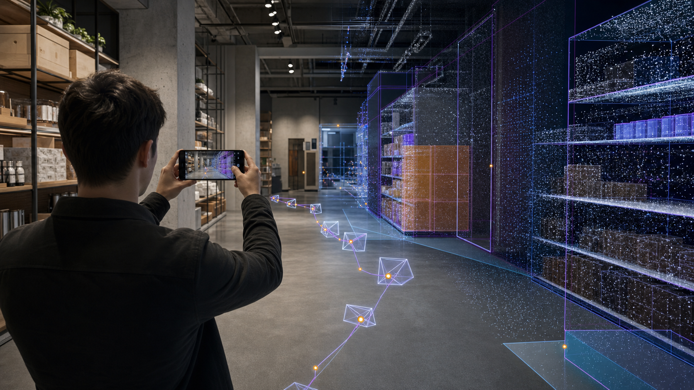
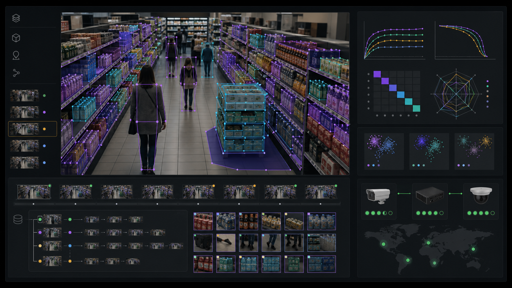

Video is isolated
Each feed stores pixels without a shared model of the physical space.

MANYSIGHT
Turn mapped spaces, existing cameras and AI workflows into persistent, explainable operational intelligence.
Investor deck · Product transition · July 2026
THE PROBLEM
Each feed stores pixels without a shared model of the physical space.
One-off workers restart, lose context and produce metrics that are hard to replay.
Users see aggregates, but not the spatial evidence, provenance or actions behind them.
The missing layer is spatial memory.
THE PRODUCT THESIS
Capture geometry and camera poses.
Segment objects, planes and zones.
Anchor model outputs in world coordinates.
Derive replayable analytics with provenance.
Ask questions, review signals and automate.
A semantic digital twin becomes the common coordinate system for people, cameras, models and decisions.
WORKING PROOF
Working 2D POC — not yet a SLAM, 3D, annotation or training product.


3D ONBOARDING
INTERACTIVE DIGITAL TWIN
Rotate the model, enter walk mode, click objects and toggle spatial layers.
Orbit: drag / wheel · Walk: arrow keys or WASD
BEACHHEAD → PLATFORM
Entry and zone traffic · queue pressure · anonymous flow and dwell · layout comparison
Flow, shelf state and asset reconciliation
Anonymous space utilization and safety workflows
Occupancy, room usage and facility operations
WHY NOW
RoomPlan already turns LiDAR-equipped iPhone/iPad scans into structured room geometry and USD/USDZ assets.
OpenUSD provides layerable scenes; glTF provides efficient browser delivery.
Three.js renders and interacts with the twin without specialist desktop software.
Governed tools let AI agents inspect context, configure analyses and return evidence-backed results.
Sources: developer.apple.com/augmented-reality/roomplan · openusd.org · threejs.org
POSITIONING
Strong operational video and search. Usually tied to a camera stack.
Example: Verkada People AnalyticsRich scene composition and simulation. Often heavy for day-to-day camera intelligence.
Example: NVIDIA OmniverseAnnotation, datasets, training and deployment. Limited spatial operating context.
Example: RoboflowA persistent spatial model connecting live observations, governed AI workflows and operational decisions.
Category references: verkada.com · docs.omniverse.nvidia.com · docs.roboflow.com

DATA FLYWHEEL
CONVERSATIONAL OPERATIONS
“Compare queue pressure before and after the layout change—and show me where the difference happened.”
Resolve sites, zones, time ranges and metric definitions.
Use permissioned MCP/API tools, never unrestricted database access.
Check freshness, provenance, model version and limitations.
Return a chart, 3D overlay, supporting observations and suggested next action.
StoreLens already exposes governed MCP tools; the customer-facing conversational layer is roadmap.
TARGET ARCHITECTURE
Camera connectors · local secrets · supervised workers · offline buffer · checkpoints
Tenancy · scene graph · observation ledger · state · insights · review · audit
Digital twin · dashboards · conversation · alerts · annotation · administration
Camera credentials stay at the edge. The cloud stores spatial truth and approved evidence.
FEATURES STILL MISSING
Guided scan app, SLAM pipeline, scene graph, asset versions, camera alignment and drift checks.
Enrollment, secrets, offline buffering, checkpoints, logs, updates and rollback.
Evidence storage, annotation QA, dataset registry, evaluation, model registry and deployment.
Organizations, sites, RBAC, billing, usage controls, integrations, exports and support tooling.
Consent/purpose, retention, audit, quality gates, uncertainty, privacy and incident operations.
Business ontology, query planner, permissions, citations, memory and action confirmation.
12-MONTH EXECUTION
2D geometry, observations, analytics, alerts, insights and MCP.
Gate: honest demoTenancy, PostgreSQL, idempotency, edge supervision, evaluation harness.
Gate: 7 days unattendedScan app, 3D scene graph, auto-calibration, interactive twin, annotation.
Gate: one repeatable installModel registry, rollout/rollback, conversation, multi-site operations.
Gate: paid expansionGO-TO-MARKET
Technical: workflow accuracy, uptime, latency, gaps and recovery
Operational: manager usage, reviewed signals and actions influenced
Economic: installation time, support burden and compute cost per camera
No fabricated traction or pricing: those become investor-grade only after design-partner evidence.
THE INVESTMENT THESIS
Proof exists
StoreLens validates the observation, geometry, insight and MCP foundations.
The wedge is disciplined
Retail operations creates a measurable first use case without limiting the architecture.
The roadmap is concrete
3D onboarding, reliable edge execution and a closed-loop model lifecycle turn the POC into a customer platform.
The next milestone: one site running for 30 days, producing trusted operational value, with an installation that can be repeated.
ManySight · Spatial intelligence for the physical world